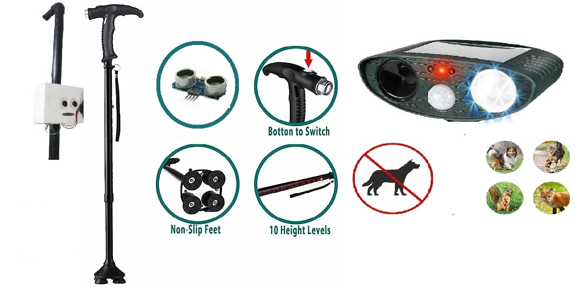
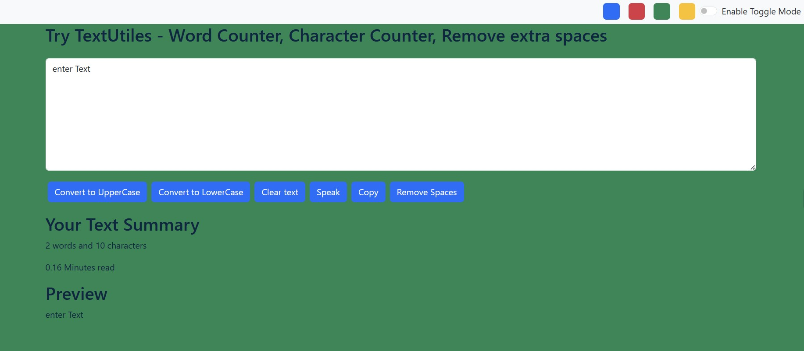

Projects

SMART WALKING BLIND STICK
The IoT Smart Stick for the Blind uses an Arduino microcontroller board, ultrasonic sensors, a sound producing device, obstacle detection, navigation guidance, and GPS tracking to improve mobility and safety.

TextUtiles
In this project, we are utilizing the power of React and Bootstrap to handle text conversion tasks. By combining React and Bootstrap, we are able to create a seamless and user-friendly experience for our text conversion project.